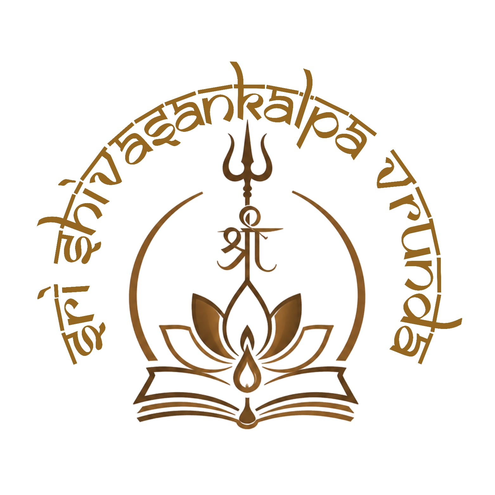
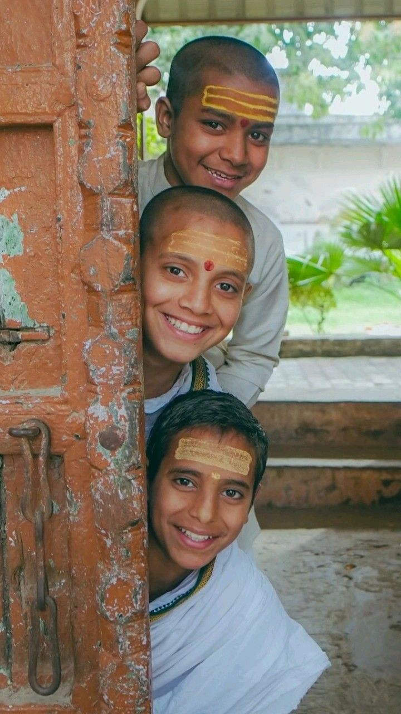

Sri Shivasankalpa Vṛnda
Uplifting Vedic Gurukulas through Seva, Śraddhā & Saṁskāra
तन्मे मनः शिवसङ्कल्पमस्तु
May our minds be filled with auspicious resolve
सङ्कल्पः
A Resolve Born of the Sringeri Guru Paramparā
With the boundless grace of the Jagadgurus of Dakshiṇāmnāya Śrī Śāradā Pīṭham, Sringeri, Sri Shivasankalpa Vṛnda is a charitable trust devoted to supporting Veda Gurukulas and sustaining the timeless Guru–Śiṣya Paramparā.

कार्यक्षेत्राणि
What We Do
Vedic Education
Sustaining Gurukulas where students learn the Vedas, Ṣaḍaṅgas and Śāstras through the oral guru-śiṣya tradition.
Gurukula Welfare
Learning materials, student aids, infrastructure, and welfare of revered Adhyāpakas.
Honouring Scholars
Recognising the silent sacrifice of Vedic Adhyāpakas who have dedicated their lives to this tradition.
Vedic Research
Supporting research and Vedic libraries — preserving manuscripts and śāstric scholarship.
Go-Saṁrakṣaṇam
Supporting Gośālās and the sacred cause of cow protection, shelter, and welfare.
Loka-Kalyāṇa Events
Programmes for the welfare, support and promotion of the Vedic Gurukula tradition.
सहभागितायाः त्रयो मार्गाः
Three Ways to Participate
Enrol Your Child
तमसो मा ज्योतिर्गमय
Let your child grow in the light of the Vedas — under the care of scholarly Adhyāpakas.
shivasankalpa.org/gurukulas
Offer Your Support
Scan to make your donation
Volunteer · Talk to Us
तनु · मन · धन
Participate in our programmes — volunteers are warmly welcomed for Gurukula seva, daana, and outreach.
+91 70903 04901
info@shivasankalpa.org